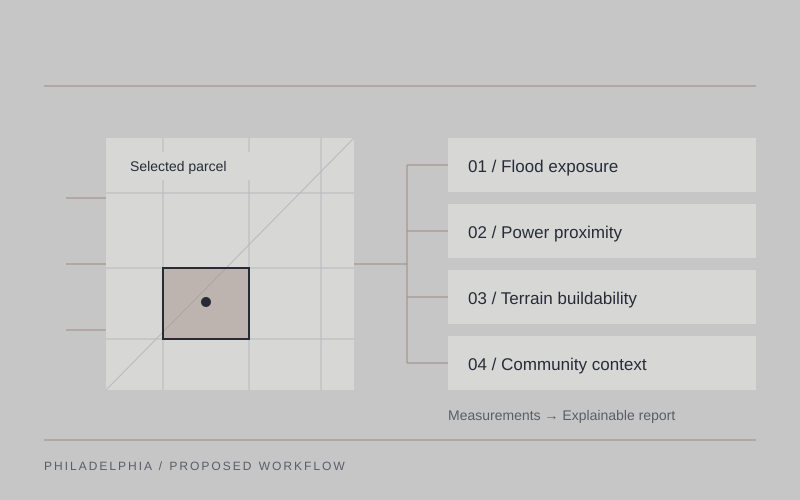

Data Center Parcel Suitability Agent: An Explainable Web-Based Screening Tool
A proposed AI-assisted screening tool bringing flood exposure, power proximity, terrain, and community context into one transparent parcel report.
Explore project